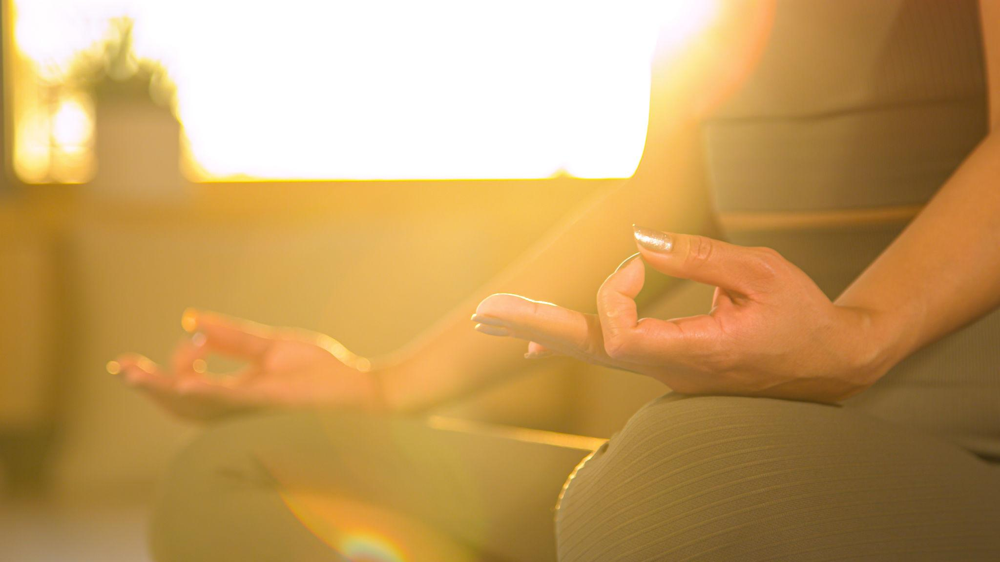

Look at any ancient yogic sculpture or painting — the hands are never in random positions. Every gesture is intentional, precise, and carries a specific meaning and function. These are mudras: some of the most refined and powerful tools in the entire yoga tradition.
The word mudra comes from Sanskrit and means "seal," "mark," or "gesture." In the context of yoga, a mudra is a position of the hands, body, or face that creates a specific energetic circuit — redirecting the flow of prana (life force) and influencing the state of mind and nervous system.
How Mudras Work
According to the classical tradition, the entire body is permeated by a network of nadis — subtle energy channels through which prana flows. There are said to be 72,000 nadis in the human body, with three main channels: Ida, Pingala, and Sushumna.
The hands are particularly rich in nerve endings and energy terminations. Each finger corresponds to one of the five elements (pancha tattvas):
- Thumb — Fire (Agni)
- Index finger — Air (Vayu)
- Middle finger — Space/Ether (Akasha)
- Ring finger — Earth (Prithvi)
- Little finger — Water (Jala)
When specific fingers are brought into contact, the corresponding elemental energies are enhanced, balanced, or redirected. This is not metaphor — it has measurable physiological effects. Research has shown that certain mudras produce distinct changes in galvanic skin response, brainwave patterns, and autonomic nervous system activation.

The Major Categories of Mudras
Classical texts such as the Hatha Yoga Pradipika and Gheranda Samhita describe dozens of mudras across several categories:
Hasta Mudras — Hand Gestures
The most accessible category — specific positions of the fingers and hands that can be practised during meditation, pranayama, or even daily activity. They work primarily with the elemental energies of the body.
Kaya Mudras — Body Gestures
These involve specific body positions and muscular engagements combined with breath awareness. They work more directly with prana in the major energy channels and chakras.
Mana Mudras — Head Gestures
These involve the eyes, ears, nose, tongue, and lips. They work with the five senses and their corresponding energy pathways. Shambhavi mudra (gazing at the eyebrow centre) is one of the most powerful in this category.
Bandha Mudras — Lock Gestures
Bandhas are muscular contractions that act as "locks," preventing prana from dissipating and directing it upward through the Sushumna. The three main bandhas are:
- Mula Bandha — root lock (perineum contraction)
- Uddiyana Bandha — abdominal lock (diaphragm lift)
- Jalandhara Bandha — throat lock (chin to chest)


Mudras in Classical Practice
In classical yoga, mudras are not practised in isolation. They are integrated into asana, pranayama, and meditation — each amplifying the effect of the others. The Gheranda Samhita states that mudras are the highest of the yoga practices because they work simultaneously with the physical, pranic, and mental bodies.

— Hatha Yoga Pradipika 2.15
The Importance of Correct Transmission
The classical tradition is very clear on this: mudras are powerful tools, and like all powerful tools, they require proper instruction. The most advanced mudras — particularly the bandha mudras and kaya mudras — involve breath retention and intense internal muscular engagement that can have strong effects on the cardiovascular and nervous systems.
This is why traditional yoga always emphasised the teacher-student relationship. Not to create dependency, but because direct, personalised guidance ensures the practice is both safe and effective. The teacher can observe subtle signs — in posture, breath, skin colour, and behaviour — that the student cannot observe in themselves, and adjust the practice accordingly.